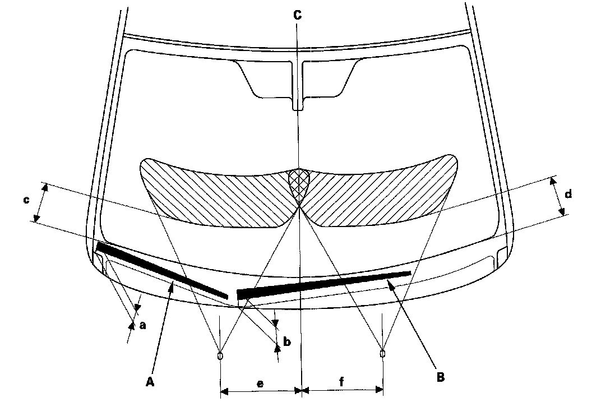
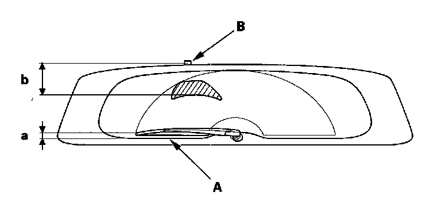

Wiper Arm: Adjustments
Wiper Arm/Nozzle AdjustmentWindshield
Wiper arms park position
1. When the wiper arms stop at the park (automatic stop) position, confirm that they are at the standard position.
a: Position at about 1.6 in. (40.7 mm) from the top of cowl cover (A)
b: Position at about 2.1 in. (54.3 mm) from the top of cowl cover (A)
Washer nozzle position

2. When you turn on the washers, confirm 50 % or more of the washer fluid lands within the spray area. If the spray area is not within the standard positions, adjust the nozzles.
c: Position at about 6.2 in. (157.3 mm) from the top of the black ceramic area (B) at the lower windshield.
d: Position at about 6.2 in. (157.3 mm) from the top of the black ceramic area (B) at the lower windshield.
e: Position at about 11.8 in. (300 mm) from the windshield center line (C).
f: Position at about 11.8 in. (300 mm) from the windshield center line (C).
Rear Window
Wiper arm park position
1. When the wiper arm stops at the park position, confirm that it is at the standard position,
a: Position at about 0.4 in. (11.2 mm) from the black ceramic area (A)
Washer nozzle position

2. When you turn on the washers, confirm 50% or more of the washer fluid lands within the spray area. If the spray area is not within the standard positions, adjust the nozzles.
b: Position at about 5.1 in. (130.2 mm) from the rear washer nozzle (B)